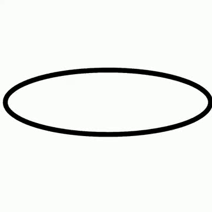
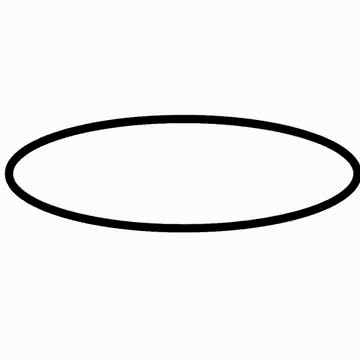

Deep Learning : Video Frame Interpolation
Implémentation du modèle RIFE (Real-Time Intermediate Flow Estimation) pour doubler le framerate de vidéos. Architecture de réseaux de neurones multi-échelle pour l'estimation de flux optique bidirectionnel et la synthèse de frames intermédiaires.
Technologies
Objectif
- Implémenter une architecture RIFE (IFNet + FusionNet) pour l'interpolation vidéo
- Doubler le framerate des vidéos : 30 fps → 60 fps
- Entraîner le modèle sur un dataset de triplets de frames (Kaggle)
- Comparer les résultats originaux et interpolés sur des vidéos de test
🎬 Comparaison Vidéo — Test 1
Vidéo de test 1 (360×360). La vidéo originale à 30 fps est à gauche, la vidéo interpolée à 60 fps à droite. Observez la fluidité accrue des mouvements dans la version interpolée.
Test 1 — 30 fps
277 frames · 360×360 · 9.2s
Test 1 — 60 fps
553 frames · 360×360 · 9.2s
🎬 Comparaison Vidéo — Test 2
Vidéo de test 2 (640×360). Même principe : original à 30 fps vs interpolé à 60 fps. Les frames intermédiaires sont générées par le modèle, pas simplement dupliquées.
Test 2 — 30 fps
360 frames · 640×360 · 12.0s
Test 2 — 60 fps
719 frames · 640×360 · 12.0s
🔬 Comment ça marche : Séquence d'interpolation
Entre chaque paire de frames originales, le modèle génère une frame intermédiaire. Ci-dessous, une séquence extraite de la vidéo test 1 montrant : frame originale (n) → frame générée par le modèle → frame originale (n+1).


🏗️ Architecture du Modèle
Le modèle est composé de deux réseaux de neurones travaillant en cascade :
IFNet (Intermediate Flow Network) : Réseau multi-échelle (3 blocs) qui estime le flux optique bidirectionnel entre les deux frames d'entrée. Chaque bloc opère à une résolution différente (×4, ×2, ×1) et affine progressivement l'estimation du flux. Les frames sont warpées via le flux estimé, puis fusionnées avec un masque de pondération appris.
FusionNet : Petit U-Net qui prend en entrée les frames originales, les frames warpées, le masque et le flux pour produire un résidu d'image. Ce résidu est ajouté au résultat de la fusion IFNet pour corriger les artefacts et produire la frame finale.
RIFEModel
├── IFNet (estimation de flux multi-échelle)
│ ├── IFBlock₀ (scale=4) ─── Estimation grossière
│ ├── IFBlock₁ (scale=2) ─── Raffinement
│ └── IFBlock₂ (scale=1) ─── Raffinement final
│ └── Sorties: flux (4ch), masque (1ch)
│ → Warping des images → Fusion pondérée
│
└── FusionNet (raffinement U-Net)
├── Encoder: 3 niveaux de downsampling
├── Bottleneck
├── Decoder: 3 niveaux + skip connections
└── Sortie: résidu RGB → merged + residual = frame finale
📂 Structure du projet
video_frame_interpolation/
├── model/
│ ├── rife_model.py # IFNet + FusionNet + RIFEModel
│ ├── warping.py # Fonction de warping (grid_sample)
│ └── checkpoints/
│ └── best_model.pth # Poids entraînés
├── inference/
│ └── video_interpolator.py # Script d'inférence vidéo
├── training_kaggle/
│ └── train_rife_kaggle.ipynb # Notebook d'entraînement (Kaggle GPU)
├── training_local/
│ └── train_rife.ipynb # Notebook d'entraînement local
└── data/
├── test/ # Vidéos de test (30 fps)
└── output/ # Vidéos interpolées (60 fps)
💡 Retours d'expérience
Ce projet de deep learning m'a permis de comprendre en profondeur les architectures d'estimation de flux optique et les techniques de synthèse d'images. L'implémentation from-scratch du modèle RIFE a été particulièrement formatrice.
Défis rencontrés :
- Entraînement : Le modèle nécessite un GPU puissant. L'entraînement a été réalisé sur Kaggle avec un GPU T4/P100 pour bénéficier de sessions gratuites.
- Warping : L'implémentation correcte du backward warping avec
grid_sampleest subtile (normalisation des coordonnées, gestion des bords). - Multi-échelle : L'approche coarse-to-fine est essentielle : sans elle, le modèle n'arrive pas à estimer les grands déplacements.